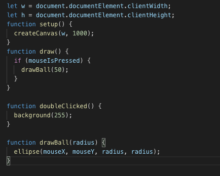

Assuming you have npm configured... Type "npm i p5" in terminal
make sure the script is linked correctly relative to your html document
write in javascript : function setup() { createCanvas(640, 480); } function draw() { if (mouseIsPressed) { fill(0); } else { fill(255); } ellipse(mouseX, mouseY, 80, 80); }
the only limit is yourself
